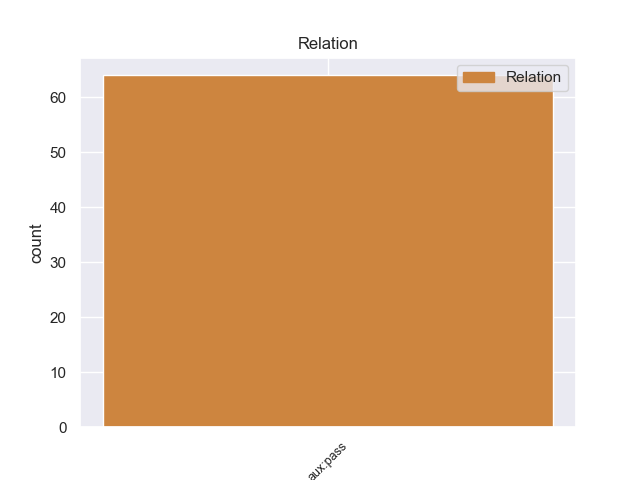
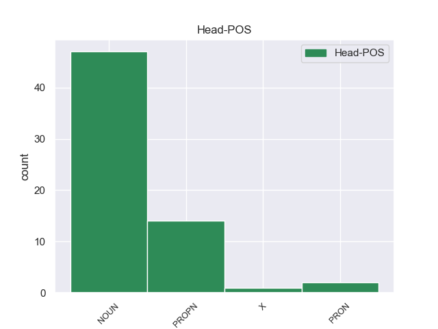

Distribution of features within this leaf



non-conforming Examples:
1 Al _ _ _ _ 0 _ _ _
2 final _ _ _ _ 0 _ _ _
3 , _ _ _ _ 0 _ _ _
4 Calvin _ _ _ _ 0 _ _ _
5 y _ _ _ _ 0 _ _ _
6 Rusty _ _ _ _ 0 _ _ _
7 , _ _ _ _ 0 _ _ _
8 así _ _ _ _ 0 _ _ _
9 como _ _ _ _ 0 _ _ _
10 los _ _ _ _ 0 _ _ _
11 otros _ _ _ _ 0 _ _ _
12 novatos _ _ _ _ 0 _ _ _
13 , _ _ _ _ 0 _ _ _
14 son ser AUX _ Mood=Ind|Number=Plur|Person=3|Tense=Pres|VerbForm=Fin 16 aux:pass _ _
15 nombrados _ _ _ _ 0 _ _ _
16 hermanos hermano NOUN _ Gender=Masc|Number=Plur 0 _ _ _
17 en _ _ _ _ 0 _ _ _
18 sus _ _ _ _ 0 _ _ _
19 respectivas _ _ _ _ 0 _ _ _
20 fraternidades _ _ _ _ 0 _ _ _
21 , _ _ _ _ 0 _ _ _
22 mientras _ _ _ _ 0 _ _ _
23 que _ _ _ _ 0 _ _ _
24 Frannie _ _ _ _ 0 _ _ _
25 se _ _ _ _ 0 _ _ _
26 marcha _ _ _ _ 0 _ _ _
27 y _ _ _ _ 0 _ _ _
28 crea _ _ _ _ 0 _ _ _
29 una _ _ _ _ 0 _ _ _
30 nueva _ _ _ _ 0 _ _ _
31 fraternidad _ _ _ _ 0 _ _ _
32 , _ _ _ _ 0 _ _ _
33 llevándo _ _ _ _ 0 _ _ _
34 se _ _ _ _ 0 _ _ _
35 a _ _ _ _ 0 _ _ _
36 muchas _ _ _ _ 0 _ _ _
37 de _ _ _ _ 0 _ _ _
38 las _ _ _ _ 0 _ _ _
39 hermanas _ _ _ _ 0 _ _ _
40 de _ _ _ _ 0 _ _ _
41 ΖΒΖ _ _ _ _ 0 _ _ _
42 con _ _ _ _ 0 _ _ _
43 ella _ _ _ _ 0 _ _ _
44 . _ _ _ _ 0 _ _ _
1 En _ _ _ _ 0 _ _ _
2 2000 _ _ _ _ 0 _ _ _
3 Ouyahia _ _ _ _ 0 _ _ _
4 fue ser AUX _ Mood=Ind|Number=Sing|Person=3|Tense=Past|VerbForm=Fin 6 aux:pass _ _
5 elegido _ _ _ _ 0 _ _ _
6 líder líder NOUN _ Number=Sing 0 _ _ _
7 de _ _ _ _ 0 _ _ _
8 su _ _ _ _ 0 _ _ _
9 partido _ _ _ _ 0 _ _ _
10 , _ _ _ _ 0 _ _ _
11 el _ _ _ _ 0 _ _ _
12 National _ _ _ _ 0 _ _ _
13 Rally _ _ _ _ 0 _ _ _
14 for _ _ _ _ 0 _ _ _
15 Democracy _ _ _ _ 0 _ _ _
16 . _ _ _ _ 0 _ _ _
1 El _ _ _ _ 0 _ _ _
2 2 _ _ _ _ 0 _ _ _
3 de _ _ _ _ 0 _ _ _
4 agosto _ _ _ _ 0 _ _ _
5 de _ _ _ _ 0 _ _ _
6 1820 _ _ _ _ 0 _ _ _
7 fue ser AUX _ Mood=Ind|Number=Sing|Person=3|Tense=Past|VerbForm=Fin 9 aux:pass _ _
8 tomado _ _ _ _ 0 _ _ _
9 prisionero prisionero NOUN _ Gender=Masc|Number=Sing 0 _ _ _
10 por _ _ _ _ 0 _ _ _
11 las _ _ _ _ 0 _ _ _
12 fuerzas _ _ _ _ 0 _ _ _
13 porteñas _ _ _ _ 0 _ _ _
14 a _ _ _ _ 0 _ _ _
15 el _ _ _ _ 0 _ _ _
16 mando _ _ _ _ 0 _ _ _
17 de _ _ _ _ 0 _ _ _
18 Manuel _ _ _ _ 0 _ _ _
19 Dorrego _ _ _ _ 0 _ _ _
20 en _ _ _ _ 0 _ _ _
21 San _ _ _ _ 0 _ _ _
22 Nicolás _ _ _ _ 0 _ _ _
23 de _ _ _ _ 0 _ _ _
24 los _ _ _ _ 0 _ _ _
25 Arroyos _ _ _ _ 0 _ _ _
26 y _ _ _ _ 0 _ _ _
27 el _ _ _ _ 0 _ _ _
28 13 _ _ _ _ 0 _ _ _
29 de _ _ _ _ 0 _ _ _
30 febrero _ _ _ _ 0 _ _ _
31 de _ _ _ _ 0 _ _ _
32 1821 _ _ _ _ 0 _ _ _
33 fue _ _ _ _ 0 _ _ _
34 dado _ _ _ _ 0 _ _ _
35 de _ _ _ _ 0 _ _ _
36 baja _ _ _ _ 0 _ _ _
37 de _ _ _ _ 0 _ _ _
38 el _ _ _ _ 0 _ _ _
39 ejército _ _ _ _ 0 _ _ _
40 . _ _ _ _ 0 _ _ _
1 Así _ _ _ _ 0 _ _ _
2 fue _ _ _ _ 0 _ _ _
3 y _ _ _ _ 0 _ _ _
4 fue _ _ _ _ 0 _ _ _
5 el _ _ _ _ 0 _ _ _
6 dios _ _ _ _ 0 _ _ _
7 de _ _ _ _ 0 _ _ _
8 ese _ _ _ _ 0 _ _ _
9 pueblo _ _ _ _ 0 _ _ _
10 , _ _ _ _ 0 _ _ _
11 que _ _ _ _ 0 _ _ _
12 fue ser AUX _ Mood=Ind|Number=Sing|Person=3|Tense=Past|VerbForm=Fin 14 aux:pass _ _
13 llamado _ _ _ _ 0 _ _ _
14 ulgo ulgo PROPN _ Number=Sing 0 _ _ _
15 , _ _ _ _ 0 _ _ _
16 por _ _ _ _ 0 _ _ _
17 el _ _ _ _ 0 _ _ _
18 nombre _ _ _ _ 0 _ _ _
19 de _ _ _ _ 0 _ _ _
20 el _ _ _ _ 0 _ _ _
21 dios _ _ _ _ 0 _ _ _
22 , _ _ _ _ 0 _ _ _
23 UL _ _ _ _ 0 _ _ _
24 y _ _ _ _ 0 _ _ _
25 la _ _ _ _ 0 _ _ _
26 bondad _ _ _ _ 0 _ _ _
27 de _ _ _ _ 0 _ _ _
28 el _ _ _ _ 0 _ _ _
29 profeta _ _ _ _ 0 _ _ _
30 , _ _ _ _ 0 _ _ _
31 Gorim _ _ _ _ 0 _ _ _
32 . _ _ _ _ 0 _ _ _
1 Esto _ _ _ _ 0 _ _ _
2 es ser AUX _ Mood=Ind|Number=Sing|Person=3|Tense=Pres|VerbForm=Fin 4 aux:pass _ _
3 denominado _ _ _ _ 0 _ _ _
4 moldes molde NOUN _ Gender=Fem|Number=Plur 0 _ _ _
5 de _ _ _ _ 0 _ _ _
6 cuñas _ _ _ _ 0 _ _ _
7 y _ _ _ _ 0 _ _ _
8 son _ _ _ _ 0 _ _ _
9 utilizados _ _ _ _ 0 _ _ _
10 para _ _ _ _ 0 _ _ _
11 realizar _ _ _ _ 0 _ _ _
12 cálculos _ _ _ _ 0 _ _ _
13 sobre _ _ _ _ 0 _ _ _
14 la _ _ _ _ 0 _ _ _
15 evolución _ _ _ _ 0 _ _ _
16 de _ _ _ _ 0 _ _ _
17 el _ _ _ _ 0 _ _ _
18 clima _ _ _ _ 0 _ _ _
19 hace _ _ _ _ 0 _ _ _
20 cientos _ _ _ _ 0 _ _ _
21 de _ _ _ _ 0 _ _ _
22 miles _ _ _ _ 0 _ _ _
23 de _ _ _ _ 0 _ _ _
24 años _ _ _ _ 0 _ _ _
25 . _ _ _ _ 0 _ _ _